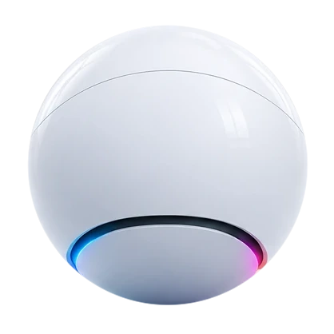
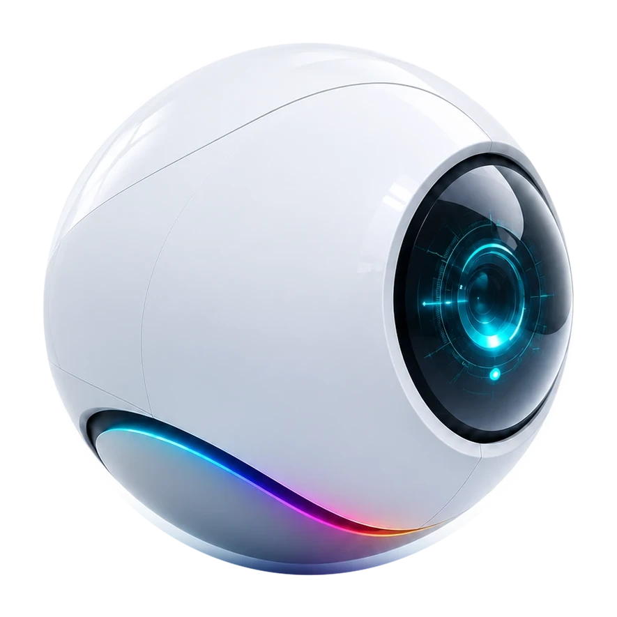
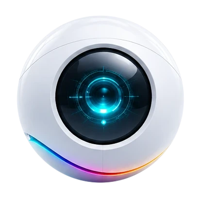

<title>Opsiogen Orb Run</title>
<meta name="claude:viewport-fit-sides" content="cover">
<link rel="stylesheet" href="https://fonts.googleapis.com/css2?family=Outfit:wght@400;500;700&display=swap">
<style>
  /* Layout: one pinned first screen. The world fills it; the character (the owner's artwork) sits on top,
     looks ahead while the page moves and turns to the visitor when it stops. One look, sunlit. */
  :root {
    --page: #0a090d;
    --ink: #f8f6f8;
    --soft: rgb(248 246 248 / 0.82);
    --shade: rgb(8 16 38 / 0.55);
    --line: rgb(248 246 248 / 0.4);
    --display: "Outfit", "Avenir Next", "Segoe UI", system-ui, sans-serif;
    color-scheme: dark;
  }
  body { background: var(--page); color: var(--ink); font-family: var(--display); margin: 0; }
  .gutter { padding-left: max(16px, env(safe-area-inset-left, 0px)); padding-right: max(16px, env(safe-area-inset-right, 0px)); }

  .stage { height: 420vh; position: relative; }
  .pin { position: sticky; top: 0; height: 100vh; height: 100svh; overflow: hidden; background: #6fa8dc; }

  .world { position: absolute; inset: -2%; background: url(img/world-1.jpg) 58% 50% / cover no-repeat; transform-origin: 58% 52%; will-change: transform; }
  .rays { position: absolute; inset: -20%; pointer-events: none; opacity: 0; transform-origin: 58% 52%;
    background: repeating-conic-gradient(from 0deg at 58% 52%, rgb(255 255 255 / 0) 0deg 5deg, rgb(255 255 255 / 0.5) 5.4deg 5.7deg, rgb(255 255 255 / 0) 6.1deg 11deg);
    -webkit-mask-image: radial-gradient(circle at 58% 52%, transparent 0 22%, #000 70%); mask-image: radial-gradient(circle at 58% 52%, transparent 0 22%, #000 70%); }
  .veil { position: absolute; inset: 0; pointer-events: none;
    background: linear-gradient(90deg, rgb(8 16 38 / 0) 42%, var(--shade) 84%), linear-gradient(180deg, rgb(8 16 38 / 0.5), rgb(8 16 38 / 0) 20%, rgb(8 16 38 / 0) 74%, rgb(8 16 38 / 0.55)); }

  .bar { position: absolute; inset: 0 0 auto; z-index: 6; display: flex; align-items: center; gap: clamp(16px, 2.4vw, 40px); height: clamp(64px, 6vw, 88px); padding-inline: clamp(16px, 3.4vw, 65px); }
  .bar img { height: clamp(22px, 2.6vw, 38px); width: auto; }
  .bar nav { display: flex; gap: clamp(14px, 2vw, 28px); font-size: clamp(14px, 1.2vw, 18px); }
  .bar .cta { margin-left: auto; background: var(--ink); color: var(--page); border-radius: 8px; padding: 0.7em 1.15em; font-weight: 500; font-size: clamp(14px, 1.2vw, 18px); white-space: nowrap; }

  .words { position: absolute; z-index: 5; right: clamp(16px, 4.4vw, 80px); top: 50%; transform: translateY(-46%); width: min(46vw, 660px); }
  .pill { display: inline-block; border: 1px solid var(--line); border-radius: 4px; padding: 0.15em 0.6em; font-size: clamp(14px, 1.2vw, 18px); margin: 0 0 clamp(16px, 2.6vh, 30px); }
  h1 { margin: 0; font-weight: 700; text-transform: uppercase; line-height: 0.95; letter-spacing: -0.02em; font-size: clamp(34px, min(6.4vw, 11.4vh), 104px); text-wrap: balance; text-shadow: 0 2px 30px rgb(8 16 38 / 0.35); }
  .go { display: inline-block; margin-top: clamp(18px, 3vh, 36px); background: var(--ink); color: var(--page); border-radius: 8px; padding: 0.8em 1.3em; font-weight: 500; font-size: clamp(15px, 1.2vw, 18px); text-decoration: none; }
  .go:focus-visible { outline: 2px solid #d8ff3e; outline-offset: 3px; }

  /* the character: trail, soft shadow, and the owner's artwork */
  .orb { position: absolute; z-index: 4; left: 27%; top: 56%; width: clamp(150px, 25vw, 400px); aspect-ratio: 1; transform: translate(-50%, -50%); will-change: transform; }
  .orb img { position: absolute; inset: 0; width: 100%; height: 100%; object-fit: contain; display: block; will-change: opacity, transform; }
  .ground { position: absolute; left: 8%; right: 8%; bottom: -17%; height: 17%; border-radius: 50%; filter: blur(18px);
    background: radial-gradient(ellipse at 42% 50%, rgb(40 110 255 / 0.62), rgb(150 70 255 / 0.5) 45%, rgb(255 80 170 / 0.28) 62%, rgb(255 80 170 / 0) 76%); }
  .trail { position: absolute; z-index: 3; left: 27%; top: 56%; width: 80vw; height: clamp(120px, 20vw, 330px); transform-origin: 100% 50%; transform: translate(-100%, -50%) rotate(-16deg); opacity: 0; pointer-events: none; filter: blur(14px);
    background: linear-gradient(180deg, rgb(0 230 255 / 0), #19d8ff 14%, #2f7bff 34%, #8a3cff 54%, #ff3ea5 74%, #ff8a1e 90%, rgb(255 138 30 / 0));
    -webkit-mask-image: linear-gradient(90deg, transparent, #000 55%, #000 92%, transparent); mask-image: linear-gradient(90deg, transparent, #000 55%, #000 92%, transparent); }

  .foot { position: absolute; z-index: 5; inset: auto 0 0; display: flex; align-items: flex-end; justify-content: space-between; gap: 16px; padding: 0 clamp(16px, 3.4vw, 65px) max(22px, env(safe-area-inset-bottom, 0px)); font-size: 12px; letter-spacing: 0.2em; text-transform: uppercase; color: var(--soft); }
  .dots { display: flex; gap: 12px; align-items: center; }
  .dots span { width: 8px; height: 8px; border-radius: 50%; background: rgb(255 255 255 / 0.45); }
  .dots span:first-child { background: #fff; box-shadow: 0 0 0 5px rgb(255 255 255 / 0.22); }

  @media (max-width: 760px) {
    .bar nav { display: none; }
    .words { right: 0; left: 0; top: clamp(84px, 13vh, 130px); transform: none; width: auto; padding-inline: max(20px, env(safe-area-inset-left, 0px)); }
    .orb, .trail { left: 42%; top: 70%; }
    .orb { width: clamp(150px, 48vw, 260px); }
    .veil { background: linear-gradient(180deg, rgb(8 16 38 / 0.62), rgb(8 16 38 / 0.25) 46%, rgb(8 16 38 / 0) 62%, rgb(8 16 38 / 0.5)); }
    .foot .tip { display: none; }
  }

  .after { background: var(--page); padding-block: clamp(56px, 9vw, 120px); }
  .after p { max-width: 60ch; margin: 0 auto; color: #a2a0a6; font-size: clamp(16px, 1.4vw, 20px); line-height: 1.45; text-align: center; }
</style>

<section class="stage" id="stage" aria-label="Home hero prototype">
  <div class="pin">
    <div class="world" id="world"></div>
    <div class="rays" id="rays"></div>
    <div class="veil"></div>

    <div class="bar">
      
      <nav aria-label="Main"><span>Work</span><span>Services</span><span>About</span></nav>
      <span class="cta">Start a project</span>
    </div>

    <div class="trail" id="trail"></div>
    <div class="orb" id="orb" aria-hidden="true">
      <div class="ground"></div>
      
      
      
    </div>

    <div class="words">
      <p class="pill">AI-first design and digital company</p>
      <h1>Your digital department, without the hiring.</h1>
      <a class="go" href="#after">See our work</a>
    </div>

    <div class="foot">
      <span>01 · Websites &amp; apps</span>
      <div class="dots" aria-hidden="true"><span></span><span></span><span></span><span></span><span></span></div>
      <span class="tip">Scroll, then stop</span>
    </div>
  </div>
</section>

<section class="after" id="after">
  <div class="gutter"><p>Prototype of one world. Scroll and the character looks ahead at the place it is flying into; stop and it turns to you. The other four worlds follow the same way.</p></div>
</section>

<script>
(function () {
  // The character is the owner's artwork, unchanged: the front view faces the visitor, the back view looks at the road,
  // and the three-quarter view is shown for a moment in between.
  var orb = document.getElementById("orb"), trail = document.getElementById("trail"), world = document.getElementById("world"), rays = document.getElementById("rays"),
      vFront = document.getElementById("vFront"), vTurn = document.getElementById("vTurn"), vBack = document.getElementById("vBack");
  var still = window.matchMedia("(prefers-reduced-motion: reduce)").matches;
  var turn = 0, speed = 0, lastY = window.scrollY, lastMove = -1e9, want = [0, 0], lean = [0, 0];
  window.addEventListener("scroll", function () { var y = window.scrollY; speed += Math.min(60, Math.abs(y - lastY)); lastY = y; lastMove = performance.now(); }, { passive: true });
  window.addEventListener("pointermove", function (e) { var r = orb.getBoundingClientRect(); want = [(e.clientX - (r.left + r.width / 2)) / window.innerWidth, (e.clientY - (r.top + r.height / 2)) / window.innerHeight]; }, { passive: true });
  function clamp(v) { return v < 0 ? 0 : v > 1 ? 1 : v; }

  var prev = performance.now();
  function frame(now) {
    var dt = Math.min(0.05, (now - prev) / 1000); prev = now; var t = now / 1000;
    var moving = !still && now - lastMove < 260;
    speed *= Math.pow(0.02, dt);                                        // eases off after the last scroll
    var v = still ? 0 : Math.min(1, speed / 90);
    turn += ((moving ? 1 : 0) - turn) * (1 - Math.pow(0.0006, dt));     // 0 faces the visitor, 1 looks ahead
    vFront.style.opacity = (1 - clamp(turn / 0.5)).toFixed(3);
    vTurn.style.opacity = (turn < 0.5 ? 1 : 1 - clamp((turn - 0.5) / 0.5)).toFixed(3);
    vBack.style.opacity = turn >= 0.5 ? "1" : "0";
    lean[0] += ((moving ? 0 : want[0]) - lean[0]) * 0.08; lean[1] += ((moving ? 0 : want[1]) - lean[1]) * 0.08;   // it leans a little toward the pointer
    var bob = still ? 0 : Math.sin(t * 1.7) * 6, push = v * 10, squash = 1 - 0.08 * Math.sin(Math.PI * turn);
    orb.style.transform = "translate(-50%,-50%) translate(" + (push * 0.6 + lean[0] * 22).toFixed(1) + "px," + (bob - push * 0.3 + lean[1] * 14).toFixed(1) + "px) rotate(" + (v * -4 + lean[0] * 7).toFixed(2) + "deg) scaleX(" + squash.toFixed(3) + ")";
    trail.style.opacity = (v * 0.9).toFixed(3);
    world.style.transform = "scale(" + (1 + v * 0.07).toFixed(4) + ")";
    rays.style.opacity = (v * 0.4).toFixed(3); rays.style.transform = "scale(" + (1 + ((t * 1.4) % 1) * 0.25).toFixed(3) + ")";
    requestAnimationFrame(frame);
  }
  requestAnimationFrame(frame);
})();
</script>
